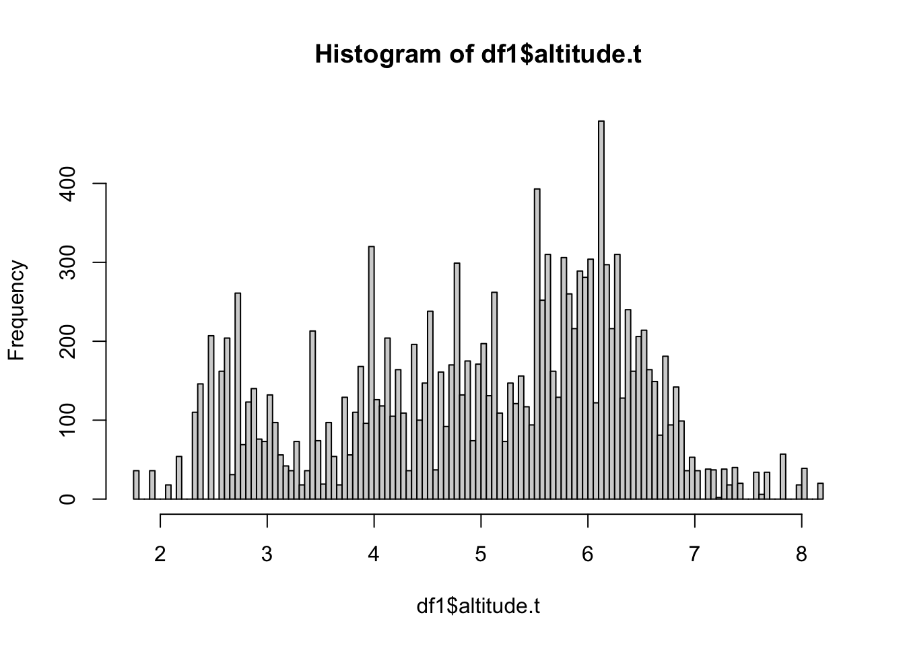
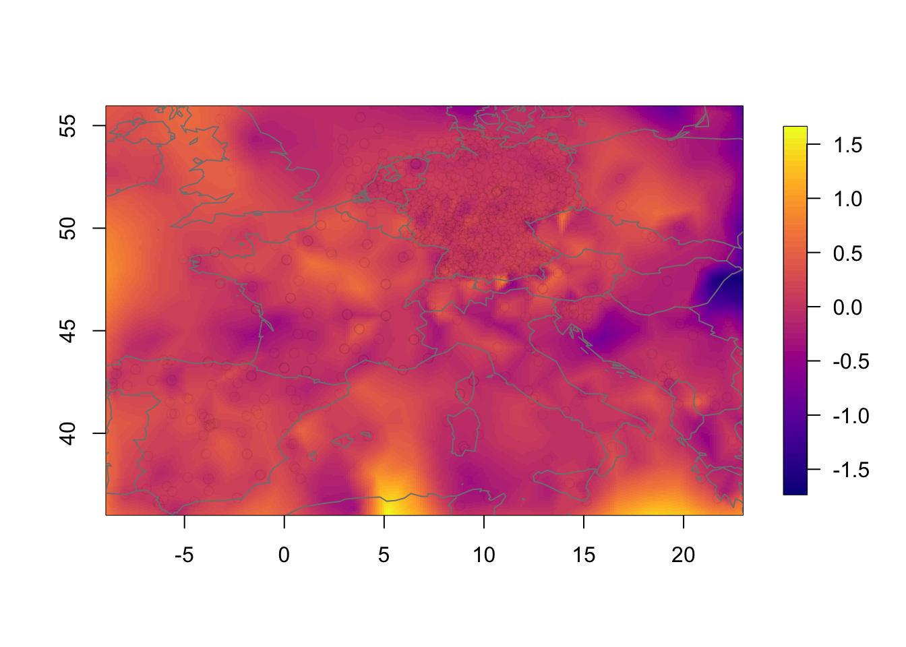

Non-separable space-time modelling of temperature data in Europe
Haakon Bakka
btopic 133 updated 18 March 2020
1 About
This is supplementary material to the paper The diffusion-based extension of the Matérn field to space-time by Bakka et. al. https://arxiv.org/abs/2006.04917
Here we see a comparison of the two first of the three main models in that paper, comparing the usual separable model to our corresponding non-separable model.
Note that, as usual, this example is created to run quickly. For a space-time model to run fast we had to take many shortcuts. This code example is therefore not a good analysis of the data, but it shows the main steps in an analysis.
1.1 Setup
First, you need to download the functions we will use to your current working directory getwd().
download.file("https://raw.githubusercontent.com/haakonbakkagit/haakonbakkagit.github.io/master/functions-rgeneric-121-march2020.R", destfile="functions-rgeneric-121-march2020.R")Then we need to download the data. This code will create a folder on your computer, under your current working directory.
dir.create("data/btopic133/", recursive = T, showWarnings = F)
download.file("https://raw.githubusercontent.com/haakonbakkagit/haakonbakkagit.github.io/master/data/btopic133/tmed-eur.Rdata", destfile="data/btopic133/tmed-eur.Rdata.R")library(INLA)
library(fields)
library(viridisLite)
library(gtools)
library(mapdata)
## Load functions
source("functions-rgeneric-121-march2020.R")1.2 Input
## Number of time points used
## Subsets the data
t.max = 4
## Max edge in spatial mesh
## Small number makes algorithm very slow
## ex: 2, 1.5
max.e = 21.3 Keeping track of objects
We define empty lists to keep track of the models we will run.
## Prior model information
M = list()
for (i in 1:3) M[[i]] = list()
## Posteriors
fits = list()
## stacks (see later)
stack = list()2 Data on weekly median temperatures
2.1 Load data
This dataset was extracted and aggregated from the GCHND Data. See the DOI doi:10.1175/JTECH-D-11-00103.1. The data here is a very small subset, please see the full data for any real applications.
load("data/btopic133/tmed-eur.Rdata")The data structure:
str(df.eur)## 'data.frame': 14563 obs. of 6 variables:
## $ station : Factor w/ 13513 levels "AE000041196",..: 8 11 11 11 15 15 17 17 18 20 ...
## $ week : num 11 8 12 11 8 11 11 8 11 8 ...
## $ tmed : num 15 10.2 10.6 14.7 9.6 ...
## $ latitude : num 36.7 36.7 36.7 36.7 36.8 ...
## $ longitude: num 3.25 4.05 4.05 4.05 5.87 ...
## $ altitude : num 24 222 222 222 11 11 7 7 4.9 6.1 ...We will explain the variables after they have been renamed.
2.2 Rename data
I rename the variables to my usual standard, to make it simpler for us to reuse code.
df1 = data.frame(locx = df.eur$longitude, locy = df.eur$latitude,
time = df.eur$week, y = df.eur$tmed)The data are measured over 20 weeks, and at longitude and latitude. The response is median daily-mean temperature over the week.
2.3 Plot observation locations
plot(df1$locx, df1$locy, col="blue",
xlab="longitude", ylab="latitude", main="Observation locations")
map("worldHires", add=TRUE, col = grey(.5))Here, we have a huge issue! Longitude and latitude are not appropriate coordinates for spatial modelling. Since this is just a code example, we will ignore this problem. But please note that any proper application should use a coordinate system (e.g. UTM) where the distances are the same on the locx-axis and the locy-axis.
2.4 Histogram of response
hist(df1$y, breaks=100)This shows that the response has a few possible outliers, but no major issues.
2.5 Altitude covariate
We transform the altitude covariate to avoid heavy skewness (look at a histogram of the altitude). Then we group it into 200 distinct value groups (similar to rounding numbers to integers), which is needed for easy use of random effects in INLA.
## Transform with our chosen function
alt = log(df.eur$altitude+10)
## We group this into classes
alt = inla.group(alt, n=200)
## We add this to the dataframe
## We note that it has been transformed in some way by writing .t
df1$altitude.t = althist(df1$altitude.t, breaks=100)
This historam looks good for a covariate. The chosen transformation is a bit arbitrary in this case, but we do not believe temperature would be linearly affected by altitude.
2.6 Select a subset
Next, select part of the dataframe, to speed up computations.
if (T) {
stopifnot(t.max <= 20)
df2 = df1[df1$time <= t.max, ]
} else {
## Alternative: use every 3rd week and recode time variable
## This results in weaker time dependency
stopifnot(t.max < 7)
df2 = df1[df1$time %in% ((1:t.max)*3), ]
df2$time = df2$time/3
}
summary(df2)## locx locy time y
## Min. :-8.9 Min. :36 Min. :1.0 Min. :-18.0
## 1st Qu.: 6.5 1st Qu.:46 1st Qu.:2.0 1st Qu.: -0.8
## Median : 9.5 Median :50 Median :3.0 Median : 1.4
## Mean : 8.6 Mean :49 Mean :2.5 Mean : 1.9
## 3rd Qu.:12.3 3rd Qu.:52 3rd Qu.:3.0 3rd Qu.: 4.1
## Max. :23.0 Max. :56 Max. :4.0 Max. : 14.8
## altitude.t
## Min. :1.8
## 1st Qu.:4.0
## Median :5.3
## Mean :5.0
## 3rd Qu.:6.1
## Max. :8.23 Data exploration
We plot how the response changes in time.
plot(df2$time, df2$y)We run raw estimates of the means over each timepoint.
for (i in 1:t.max) {
df.temp = df2[df2$t == i, ]
print(mean(df.temp$y))
}## [1] 2.7
## [1] 3
## [1] 1.2
## [1] 0.49We plot how the response changes in (transformed) altitude.
plot(df2$altitude.t, df2$y)3.1 Plot data in space
We visualise some slices of the data.
for (i in 1:3) {
df.temp = df2[df2$time == i, ]
quilt.plot(x = df.temp$locx, y = df.temp$locy, z = df.temp$y,
nx = 40, ny = 40, col = plasma(101),
main = paste("Plot data in year", i), zlim=range(df2$y))
}The data clearly change in time. The spatial structure, however, is quite flat, with a low range and “few effective replicates”. This will lead to problems in estimating the spatial range.
3.2 Plot in latitude
We know the earth has a very strong latitude effect, where it gets colder to the North.
plot(df2$locy, df2$y)
abline(lm(df2$y ~ df2$locy), col="blue")4 Simple model
Define some variables to be used throughout, as hyper-prior specifications.
hyper.iid.fix = list(prec = list(initial = -2*log(0.1), fixed=T))
hyper2 = list(prec = list(prior="pc.prec", param=c(0.5,0.5)))
hyper.ar1.rho = list(rho = list(prior = "pc.cor1", param=c(0.95,0.5)))We set up a model with no spatial or spatio-temporal random effect, only using one-dimensional random effects.
## Formula
form.lmm = y ~ locy + f(time, model = "iid", hyper = hyper2) + f(altitude.t, model = "rw1", hyper = hyper.iid.fix, scale.model = T)
## Fit model
fits[[1]] = inla(form.lmm,
family="gaussian",
data=df2,
num.threads = 3,
control.predictor = list(compute=T),
control.inla = list(int.strategy = "eb"))summary(fits[[1]])##
## Call:
## c("inla(formula = form.lmm, family = \"gaussian\", data = df2,
## control.predictor = list(compute = T), ", " control.inla =
## list(int.strategy = \"eb\"), num.threads = 3)" )
## Time used:
## Pre = 3.26, Running = 1.18, Post = 0.28, Total = 4.72
## Fixed effects:
## mean sd 0.025quant 0.5quant 0.97quant mode kld
## (Intercept) 23.49 0.777 21.96 23.49 24.95 23.49 0
## locy -0.44 0.011 -0.47 -0.44 -0.42 -0.44 0
##
## Random effects:
## Name Model
## time IID model
## altitude.t RW1 model
##
## Model hyperparameters:
## mean sd 0.025quant
## Precision for the Gaussian observations 0.148 0.004 0.141
## Precision for time 0.829 0.584 0.168
## 0.5quant 0.97quant mode
## Precision for the Gaussian observations 0.148 0.157 0.148
## Precision for time 0.685 2.246 0.434
##
## Expected number of effective parameters(stdev): 6.92(0.00)
## Number of equivalent replicates : 457.68
##
## Marginal log-Likelihood: -8178.85
## Posterior marginals for the linear predictor and
## the fitted values are computedresid = df2$y - fits[[1]]$summary.linear.predictor$mean
hist(resid, breaks = 200)These residuals have some outliers at low temperatures. But since there are so few, and they are not too far out, we will proceed without any adjustments.
4.1 Plot residuals in space
We plot the resiudlas in space to check if there is a residual spatio-temporal structure, and there is.
for (i in 1:3) {
df.temp = df2[df2$t == i, ]
resid.temp = resid[df2$t == i]
quilt.plot(x = df.temp$locx, y = df.temp$locy, z = resid.temp,
nx = 40, ny = 40, col = plasma(101),
main = paste("Residuals year", i), zlim = range(resid))
}5 Create spatial and temporal meshes
The temporal mesh is just a uniform grid of values.
mesh.t = inla.mesh.1d(1:t.max)We set up the spatial mesh with no additional explanations. See tutorials on spatial models for details on spatial meshes.
mesh.s = inla.mesh.2d(loc = cbind(df2$locx, df2$locy),
max.edge=max.e*c(1, 2),
cutoff=max.e/5)plot(mesh.s)
axis(1)
axis(2)The total dimension of the space-time model component is:
mesh.s$n*mesh.t$n## [1] 35926 Separable space-time model component
This is the standard model to use in INLA for space-time random effects.
6.1 Spatial part of the separable model
This model component can be grouped with time to produce a spatio-temporal model component. It can also be used by itself to create a purely spatial component.
## Model component in space
mco.space = inla.spde2.pcmatern(mesh = mesh.s,
prior.range = c(100, .5), prior.sigma = c(1, .5))6.2 Stack for the separable model
For a simple spatial component we use the following A matrix.
A.s1 = inla.spde.make.A(mesh = mesh.s, loc = cbind(df2$locx, df2$locy))For the separable space-time component we use this A matrix.
iset = inla.spde.make.index('i', n.spde = mesh.s$n, n.group = t.max)
A.st = inla.spde.make.A(mesh = mesh.s, loc = cbind(df2$locx, df2$locy), group = df2$time) stack[[2]] = inla.stack(
data = list(y = df2$y),
effects = list(iset, m = rep(1, nrow(df2)),
time = df2$time, altitude.t = df2$altitude.t,
s = 1:mesh.s$n),
A = list(A.st, 1, 1, 1, A.s1),
tag = 'stdata') 6.3 Separable model formula
We create a short description of the model number 2:
M[[2]]$shortname = "Separable"We set up the formula and the model components therein.
## The separable model
hyper22 = list(prec = list(initial = -2*log(5), fixed=T))
## The formula
## It is possible to add a spatial random effect (uncomment f(s))
form.sep = y ~ -1 + m + f(i, model = mco.space, group = i.group,
control.group = list(model="ar1", hyper = hyper.ar1.rho)) + f(time, model = "iid", hyper=hyper22) + f(altitude.t, model = "rw1", hyper=hyper.iid.fix, scale.model = T) #+ f(s, model=mco.space)
M[[2]]$formula = form.sep7 Nonseparable space-time model component
7.1 Nonseparable model: rgeneric object
## Rgeneric object containing needed variables
## Mesh in space and time
## Lambdas for exponential prior on transformed hyper-param (1/rt, 1/rs and sig)
rgen.obj = list(mesh.space = mesh.s,
mesh.time = mesh.t,
lambdas = c(1,1,5))
## Nonsep model definition
nm = mesh.s$n*mesh.t$n
## The non-separable random effect / random field
mco.nonsep = inla.rgeneric.define(
model = stmodel121.interpret, debug = FALSE, n = nm, obj = rgen.obj)7.2 Stack for the nonseparable model
## Special: Since the index is very structured we can do this
## We know that iset is in the right order
## (year 1 then year 2 etc, with the whole spatial mesh each time)
i.nonsep = 1:(mesh.s$n * mesh.t$n)
stack[[3]] = inla.stack(
data = list(y = df2$y),
effects = list(i.nonsep = i.nonsep, m = rep(1, nrow(df2)),
time = df2$time, altitude.t = df2$altitude.t,
s = 1:mesh.s$n),
A = list(A.st, 1, 1, 1, A.s1),
tag = 'stdata') 7.3 Nonseparable model formula
We create a short description of the model number 2:
M[[2]]$shortname = "Non-separable"We set up the formula and the model components therein.
mco.nonsep.fix = inla.rgeneric.define(model = stmodel121.interpret,
debug = FALSE, n = nm, obj = rgen.obj)
## The formula
## It is possible to add a spatial random effect (uncomment the f(s))
form.nonsep = y ~ -1 + m + f(i.nonsep, model = mco.nonsep.fix, n = nm) + f(time, model = "iid", hyper = hyper22) + f(altitude.t, model = "rw1", hyper = hyper.iid.fix, scale.model = T) #+ f(s, model=mco.space)
M[[3]]$formula = form.nonsep8 Compute inference with INLA
Setup some initial values (use NULL if you do not know them).
M[[2]]$init = c(0.404 , 2.207 , 1.813 , 3.804)
M[[3]]$init = c(0.435 , 8.012 , 2.944 , 2.553)8.1 Time-consuming INLA run
## Fit model 2 and 3
for (i in 2:3){
print(paste("Running: ", i))
stk = stack[[i]]
fits[[i]] = inla(M[[i]]$formula,
family="gaussian",
data=inla.stack.data(stk),
control.predictor=list(A=inla.stack.A(stk), compute=T),
#verbose=T,
num.threads = 3,
control.inla = list(int.strategy = "eb"),
control.mode = list(restart=T, theta=M[[i]]$init),
control.compute = list(dic=TRUE, cpo=TRUE, waic=T,
mlik=T, return.marginals=F, config=T,
openmp.strategy="default", smtp="taucs")
)
}## [1] "Running: 2"
## [1] "Running: 3"Check how much time the algorithms take to run.
for (i in 1:length(M)){
print(round(fits[[i]]$cpu.used[4],2))
}## Total
## 4.7
## Total
## 41
## Total
## 547The nonseparable is slower than the separable model, because the nonseparable model is coded in R, while the separable is coded in C.
We compute good initial values as follows.
for (i in 1:length(M)){
print(paste(round(fits[[i]]$internal.summary.hyperpar$mean, 3), collapse = " , "))
}## [1] "-1.908 , -0.403"
## [1] "0.321 , 2.023 , 1.745 , 3.705"
## [1] "0.323 , 6.977 , 2.457 , 2.158"8.2 Quick summaries
## Comparison of the Precision for Gaussian observations
fits[[2]]$summary.hyperpar## mean sd 0.025quant
## Precision for the Gaussian observations 1.38 0.0506 1.28
## Range for i 7.59 0.6810 6.35
## Stdev for i 5.74 0.4947 4.84
## GroupRho for i 0.95 0.0069 0.94
## 0.5quant 0.97quant mode
## Precision for the Gaussian observations 1.38 1.48 1.38
## Range for i 7.56 8.96 7.49
## Stdev for i 5.72 6.74 5.67
## GroupRho for i 0.95 0.96 0.95fits[[3]]$summary.hyperpar## mean sd 0.025quant
## Precision for the Gaussian observations 1.4 0.051 1.3
## Theta1 for i.nonsep 7.0 0.292 6.3
## Theta2 for i.nonsep 2.5 0.115 2.2
## Theta3 for i.nonsep 2.2 0.112 1.9
## 0.5quant 0.97quant mode
## Precision for the Gaussian observations 1.4 1.5 1.4
## Theta1 for i.nonsep 7.0 7.5 7.1
## Theta2 for i.nonsep 2.5 2.7 2.5
## Theta3 for i.nonsep 2.2 2.3 2.2## To compare the 3 other hyper-parameters, we need to transform the
## hyperparameters of the non-separable model as follows
data.frame(var=c("Range.s", "Stdev", "Range.t"), exp(fits[[3]]$summary.hyperpar[c(3,4,2), c(4,3,5)]))## var X0.5quant X0.025quant X0.97quant
## Theta2 for i.nonsep Range.s 11.8 9.1 14
## Theta3 for i.nonsep Stdev 8.7 6.8 10
## Theta1 for i.nonsep Range.t 1103.6 566.8 1727The two Gaussian precisions are very similar, showing that the residuals are similar. The range in space is estimated in a similar way between the two models. The \(\sigma\) (Stdev) also gets similar estimates between the two models. The Group.rho however, is hard to compare to Range.t, as they are two different ways of thinking about correlation strength in time. In addition, because the time series in this example is very short, they are both poorly identified. The only conclusion we can draw is that there is a very very strong time dependency (in the space-time random effect).
We could have summarised the two models as follows.
#summary(fits[[2]])
#summary(fits[[3]])9 Plot results
First we plot the two one-dimensional random effect, f(time)and f(altitude).
plot(df2$time, df2$y)
points(fits[[2]]$summary.random$time$mean, col="blue", pch=19, cex=2)plot(fits[[2]]$summary.random$altitude$mean)For completeness, we add how to compare the fit and the data.
## Compare fitted values and observations.
# plot(fits[[2]]$summary.linear.predictor$mean[1:nrow(df2)], df2$y)10 Spatial plots
Extract the space-time variables. We add on the intercept for easier comparison.
rf.st.sep = fits[[2]]$summary.random$i$mean + fits[[2]]$summary.fixed$mean[1]
rf.st.nonsep = fits[[3]]$summary.random$i$mean + fits[[3]]$summary.fixed$mean[1]10.1 Function for plotting in space
We create a local plotting function, designed for this script.
## Define default plotting window
local.xlim = range(df2$locx)
local.ylim = range(df2$locy)
local.plot.field = function(field, mesh=mesh.s,
timepoint=1, xlim, ylim, ...){
## Here: mesh is spatial mesh only
# Possible error when using a wrong spatial mesh
stopifnot((length(field) %% mesh$n) == 0 )
field = field[1:mesh$n + (timepoint-1)*mesh$n]
# - only use the relevant part of the incoming vector
# Choose plotting region to be the same as the study area polygon
if (missing(xlim)) xlim = local.xlim
if (missing(ylim)) ylim = local.ylim
# Project the mesh onto a 300x300 grid
proj = inla.mesh.projector(mesh, xlim = xlim,
ylim = ylim, dims=c(300, 300))
# Do the projection
field.proj = inla.mesh.project(proj, field)
# Plot it
image.plot(list(x = proj$x, y=proj$y, z = field.proj), col = plasma(64),
xlim = xlim, ylim = ylim, ...)
}If you uncomment the purely spatial random effect, the following two chunks will run. In the default scrip, these do nothing.
if(!is.null(fits[[2]]$summary.random$s)) {
local.plot.field(fits[[2]]$summary.random$s$mean)
}if(!is.null(fits[[3]]$summary.random$s)) {
local.plot.field(fits[[3]]$summary.random$s$mean)
}10.2 Year 3
We compare the separable and nonseparable model. Here, we will only show the contribution from the spatio-temporal model component. Another interesting comparison would be to compare the linear predictor or the fitted values between the models (but we have not included this, as it is a bit less interesting than comparing the random effects).
## Change this to any year
time.k = 3Plot the separable model results.
local.plot.field(rf.st.sep, timepoint = time.k,
main = paste("Separable model at time =", i))
points(df2$locx, df2$locy, col=adjustcolor("black", alpha.f = 0.01))
map("worldHires", add=TRUE, col = grey(.5))Plot the non-separable model.
local.plot.field(rf.st.nonsep, timepoint = time.k,
main = paste("Nonsep model at time =", time.k))
points(df2$locx, df2$locy, col=adjustcolor("black", alpha.f = 0.01))
map("worldHires", add=TRUE, col = grey(.5))Plot the pointwise difference. The difference is not massive, due to the large number of observations, but neither is it small.
local.plot.field(rf.st.nonsep-rf.st.sep, timepoint = time.k)
points(df2$locx, df2$locy, col=adjustcolor("black", alpha.f = 0.01))
map("worldHires", add=TRUE, col = grey(.5))
10.3 Temporal change in the nonseparable model
We now investigate how the nonseparable random effect changes in time. The change is substantial even though the temporal correlation is very high.
zlim.temp = range(rf.st.nonsep) #c(-9, 16)
for (i in 1:3) {
local.plot.field(rf.st.nonsep, timepoint = i, zlim=zlim.temp,
main=paste("Nonsep model at time =", i))
map("worldHires", add=TRUE, col = grey(.5))
}
10.4 General note on the plots
All the spatial plots look a bit strange and irregular. This is because the spatial mesh does not have a high enough resolution. To get better plots, increse max.e, but be prepared that the code example takes quite some time to run.
11 End
Thank you for reading.